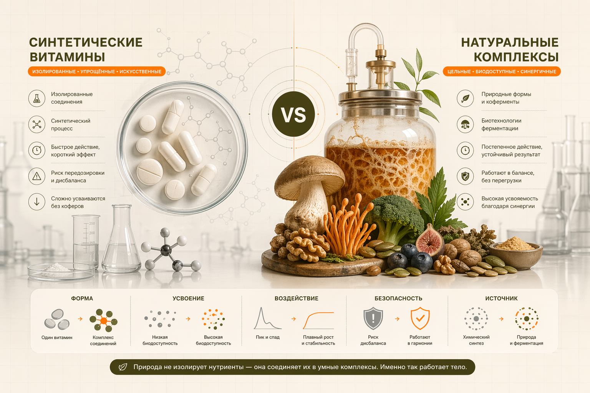

Ты покупаешь баночку синтетического витамина C за 300 рублей. В неё положили химически синтезированную аскорбиновую кислоту. Организм это не знает? Нет. Организм точно знает и усваивает это на 20-40%.
Натуральный витамин C из апельсина? Усвояемость 70-80%. И это не просто цифры — это разница в действие. Это как зарядить батарею на 25% и думать, что она полная.
Разбираем молекулярную механику биодоступности, почему синтетика проигрывает натуральным БАД, и почему MYKORA выбрала летипорус вместо таблеток витаминов.
Ключевая идея: изолированная молекула работает слабее системы. В натуральной форме витамин идёт в связке с кофакторами и даёт более высокую биодоступность.
Синтетическая молекула: когда химик синтезирует витамин C в лаборатории, он создаёт точную копию природной молекулы аскорбиновой кислоты. Молекула идентична. Но вот что критично: в природе витамин C никогда не ходит в одиночку.
В апельсине витамин C приходит с: биофлавоноидами (усиливают усвояемость на 50%), медью (кофактор), клеточной структурой, которая замедляет абсорбцию (но делает её полнее). Это синергия.
В баночке таблетки: одна молекула C + целлюлоза + кремний (наполнитель). Всё. Организм видит: это не еда, это химия. Адсорбция начинается, но неполная. Много витамина просто пройдёт через ЖКТ, не усвоившись.
Вывод: синтетика работает на 20-40% эффективности, потому что это молекула в изоляции, без её естественного окружения.
| Витамин/минерал | Синтетическая форма | Натуральная форма | Разница |
|---|---|---|---|
| Витамин C | 20-35% (аскорбиновая кислота) | 70-85% (шиповник, апельсин) | x2.5 лучше |
| Витамин D3 | 25-40% (холекальциферол синтез) | 65-80% (рыбий жир, солнечный свет) | x2 лучше |
| Магний | 10-20% (оксид магния) | 60-80% (магний цитрат, из растений) | x4-6 лучше |
| Железо | 15-25% (железо сульфат) | 60-75% (гемовое железо, из мяса/рыбы) | x3 лучше |
| Цинк | 20-30% (цинк оксид) | 55-70% (цинк пиколинат, органические источники) | x2.5 лучше |
| Полисахариды грибов | N/A (синтез невозможен) | 70-90% (культуральная жидкость летипоруса) | Природа не синтезирует |
Натуральные источники БАД содержат не одно вещество, а целый комплекс. Летипорус содержит не просто бета-глюканы, но полисахариды + триптерпены + эргостерин. Все они работают вместе, усиливая друг друга.
В натуральных БАД есть вспомогательные вещества. Магний из растения приходит вместе с витамином B6 (который помогает его усвоению). В синтетической таблетке B6 нужно добавлять отдельно, и часто его там нет.
Эволюционно организм развивался на натуральных источниках нутриентов. Синтетика для него = потенциально опасное вещество. Защитные механизмы срабатывают, абсорбция снижается. Натуральное = еда = полное всасывание.
| Параметр | Синтетический комплекс | Натуральная система MYKORA |
|---|---|---|
| Состав | Аскорбиновая кислота, цинк оксид, магний оксид, наполнители | Летипорус (полисахариды, триптерпены), витамин D3 (из рыбьего жира), магний цитрат, цинк пиколинат |
| Средняя биодоступность | ~30% | ~70% |
| Срок действия | 2-4 недели на результат | 3-7 дней на заметный результат |
| Побочные эффекты | Желудок болит, запор (из-за оксидов) | Нет, полностью натурально |
| Синергия | Минимальная (вещества конкурируют за абсорбцию) | Максимальная (все компоненты усиливают друг друга) |
| Цена за результат | $10/месяц (но работает на 30%) | $25/месяц (работает на 70%, в итоге дешевле за результат) |
Летипорус — это гриб, который рос в природе. MYKORA не синтезирует его в лаборатории. Вместо этого выращивает методом ферментации (как при производстве кваса или йогурта). Гриб растёт, выделяет полезные вещества в жидкую среду, затем экстрагируют эту жидкость.
Что получается: культуральная жидкость содержит полный набор действующих веществ летипоруса (бета-глюканы, триптерпены, экзополисахариды). Это натуральный продукт, как огурец с грядки.
Биодоступность: 70-90% (против 20-40% для синтетического витамина). Люди на максималках чувствуют результат за 2-3 дня.
Люди говорят: «Натуральное это просто маркетинг, витамин C он и есть витамин C». Это неправда. Биология показывает: организм на 50% лучше усваивает натуральное. Это не мнение, это факт измеряемый.
MYKORA выбрала летипорус вместо синтетических витаминов не потому, что это красивее звучит. Потому что это реально работает быстрее и эффективнее. Люди видят результат за 3-7 дней, а не за 3-4 недели.
Летипорус культуральная жидкость + натуральные витамины и минералы. Без синтетики, без наполнителей, без побочных эффектов. Результат за неделю.
Узнать про систему